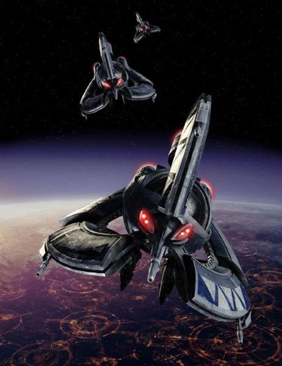

Cuenta con un gran cantidad de hangares con una amplio espacio en cada uno de ellos, con una bahia principal y bahias secundarias en ambos lados naves, contando con cazas, como cazas de combate ARC-170 o caza de cabeza Clon Z-95, bombarderos Ala-Y y interceptores Ala-V, incluyendo 40 lanzaderas de infantería LAAT. Cuenta con 8 torretas turboláseres pesados de largo alcance en ambos lados de la nave, 2 cañones turboláseres duales medianos, entre 52 y 60 torretas de cañón láser de defensa media

Cumple un papel como carguero de tropas, aunque tambien cumple la función de apoyo para los Destructores clase Venator. Cuenta con un armamento de 12 cañones turboláser cuádruples y 24 cañones láser de defensa media, una nave hecha en combate medio y cercano

Es utilizado como un burlador de bloqueos, con la capacidad de infiltrarse entre naves enemigas. Cuenta con 4 baterías turbláser de doble cañon, 2 sobre la nave y 2 por debajo de la misma de alcance medio y 4 torretas láser cuádruples para la defensa cercana de la nave, proporcionando a esta nave, agilidad en combate cercano
Es un caza de combate pesado, es tripulado por tres clones: un piloto, un artillero delantero y un artillero de cola, utilizado para combate y reconocimiento

Es un caza de combate, más ligero que el ARC-170, utilizado para labores de escolta y combate, con un piloto

Un caza bombardero, que cuenta con un piloto y un copiloto artillero, utilizado para operaciones de bombardero de precisión

Es un caza interceptor, utilizado en la mayoría de los casos como escolta, con un piloto

Tiene la capacidad para transportar más de 500 naves de combate y más de 100 naves de aterrizaje terrestre

Cuenta con un gran hangar que recorre la nave de babor a estribor, con una amplia variedad de naves, como los cazas de combate Buitres Droides, bombarderos Hiena e interceptores Tri-caza, sumando 400 de naves de asalto terrestre C-9979. Esta nave cuenta con 14 cañones turboláseres cuádruples pesados de largo alcance y 34 cañones láser dobles de alcance medio

Utilizada como nave de apoyo de flota, tenía la capacidad de mantener el combate de forma estática u ofensiva en caso de ser necesaria

Droide de combate automatizado, que cuenta con misiles de rastreo y modalidad de combate en inmovilidad (que puede disparar sin que deba estar volando)

Era un caza de gran maniobrabilidad ya que al no tener nada orgánico podía efectuar movimientos más bruscos
Es un modelo similar al Droide Buitre, solo que esta nave se especializa en los bombardeos

Presenta las mismas características que el destructor estelar Imperial I, solo que, en mayores proporciones, tanto en armamento, como en capacidad de transporte de naves

Posee un hangar, con la capacidad de albergar a 300 naves, de las cuales se encuentras, los cazas de combate TIE/LN, bombarderos TIE/sa e interceptores TIE/IN añadiendo un grupo limitado de lanzaderas Lambda

Es una variable más pequeña que la clase Imperial I, cuenta con un generador de gravedad que es utilizado para impedir que alguna nave pueda saltar al hiperespacio

Es un modelo exacto de la versión usada durante la Guerras de los Clones, utilizado como apoyo ligero o patrullaje en el borde exterior

Cuenta con amplios paneles solares en ambos lados de sus naves, proporcionándole una cobertura parcial, con la necesidad de un piloto era el caza estándar en las filas del imperio
Era una nave de alto rendimiento, utilizada por los pilotos más experimentados de la armada imperial, era la única de su tipo que contaba con escudos muy resistentes, solo que nunca logre producirse en masa

Este caza de gran velocidad y maniobrabilidad, rivalizando contra el interceptor Ala-A de la rebelión

Es un caza más grande y menos maniobrable que el TIE/LN, era utilizado en misiones de destrucción de naves y bombardeos de precisión

Con su amplio tamaño, contaba con 380 cazas estelares, una mezcla de Ala-A, Ala-B, Ala-X y Ala-Y y una limitada cantidad Ala-U

Es utilizado como un burlador de bloqueos, con la capacidad de infiltrarse entre naves enemigas

Era un caza de combate multi-posición, sirve tanto en operaciones de escolta, defensa y combate. Aunque este cuenta con 4 alas, se lo ve como una variante mejorado del Cazador de Cabeza Clon Z-95

Es uno de los primeros cazas usados por la rebelión, una nave veloz y ágil, siendo una caza capas de rivalizar contra el interceptor TIE/IN imperial

Esta nave es una versión exacta del bombardeo de la república (BTL-B) Ala-Y, solo que no tiene su cubierta

Es una caza de gran tamaño y con un armamento pesado, cuenta con tres cañones normales y un rayo unificador, con la capacidad de lograr un daño increíble a las naves capitales